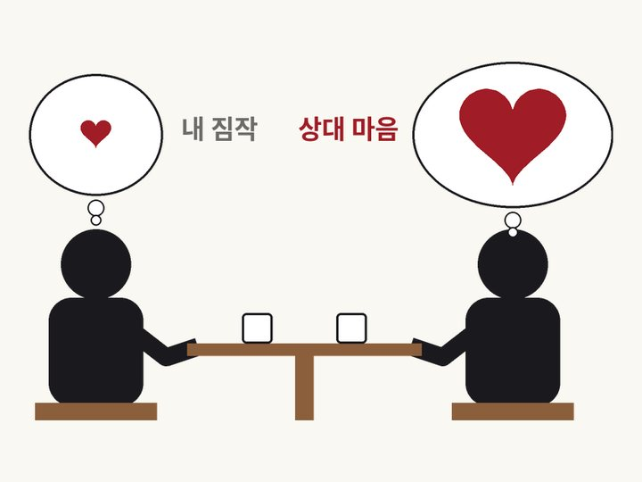
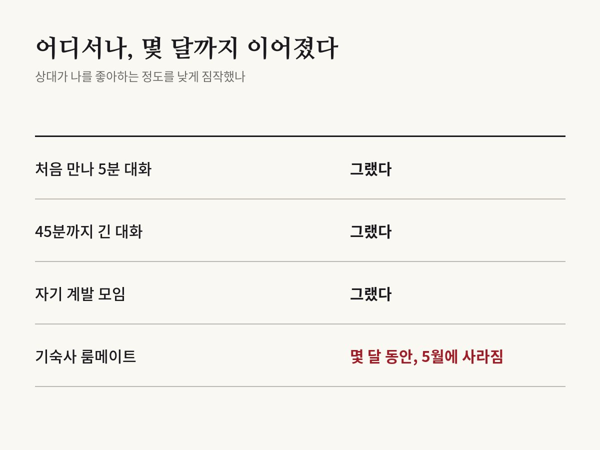

대화 망쳤다 싶어도 상대는 생각보다 널 좋아해
Boothby, Cooney, Sandstrom & Clark · Psychological Science, 2018

01결과
미국 예일대학교 등 연구진이 2018년 《심리과학》에 발표한 연구예요. 처음 만난 두 사람이 5분 동안 이야기를 나눴어요. 연구진이 미리 준비한 가벼운 질문들로 대화를 시작했어요.
대화가 끝난 뒤 두 사람은 각자 두 가지를 적었어요. 내가 상대를 얼마나 좋아하게 됐는지, 그리고 상대가 나를 얼마나 좋아할 것 같은지예요.
평균적으로 사람들은 상대가 나를 좋아하는 정도를 실제보다 낮게 짐작했어요. 상대는 내 생각보다 나를 더 좋아했고, 대화도 더 즐겼어요. 연구진은 이 차이를 '호감 격차'라고 불렀어요.

02왜 그럴까
대화가 끝나면 우리는 머릿속으로 대화를 되감아 봐요. '그 말은 하지 말걸', '너무 내 얘기만 했나' 하고 걱정해요. 실제로 대화 뒤 부정적인 생각이 많았던 사람일수록 격차가 컸어요.
흥미로운 점은 대화 영상을 본 제3자들이었어요. 이들은 표정이나 반응 같은 행동만 보고도 누가 상대를 좋아하는지 꽤 잘 맞혔어요. 호감의 신호는 분명히 있었지만, 정작 대화한 본인은 그 신호를 놓친 거예요.
상처받지 않으려고 미리 기대를 낮추는 마음도 한 가지 이유일 수 있어요. 다만 이 부분은 실험으로 직접 확인한 건 아니에요.
03처음 만난 사이만이 아니다
연구진은 모두 다섯 개의 연구로 이 결과를 확인했어요. 45분까지 길게 이야기한 경우에도 같은 격차가 나타났어요.
실험실 밖에서도 마찬가지였어요. 자기 계발 모임에서 처음 만난 사람들 사이에서도 비슷한 결과가 나왔어요.
가장 눈에 띄는 건 대학 기숙사 연구였어요. 같은 기숙사에 살게 된 신입생들은 몇 달 동안 이 격차를 보였어요. 매일 얼굴을 보는 사이인데도 기숙사 친구가 나를 좋아하는 정도를 낮게 짐작한 거예요. 이 차이는 학년 말인 5월 조사에서야 사라졌어요.
04뒤이은 연구
격차는 두 사람 사이에서 끝나지 않았어요. 2021년 같은 연구진 일부가 여럿이 함께하는 자리를 살폈어요. 소규모 모임 대화에서도, 함께 프로젝트를 하는 공대생 팀에서도 사람들은 동료가 나를 좋아하는 정도를 낮게 짐작했어요.
직장인을 조사한 연구에서는 이 격차가 큰 사람일수록 팀이 함께 일하기 어려웠다는 관련성이 나왔어요. 격차는 상하 관계보다 비슷한 위치의 동료 사이에서 가장 컸어요. 내가 남긴 인상의 나쁜 점에 신경을 많이 쓰는 사람일수록 격차도 컸어요.
이 착각은 언제 시작될까요. 같은 해 독일과 미국 연구진은 4~11세 미국 어린이 241명을 조사했어요. 격차는 다섯 살 무렵 처음 나타났고, 나이가 들수록 커졌어요. 자라면서 아이들이 '상대가 나를 어떻게 볼까'를 더 걱정하게 되기 때문이라는 해석이에요.
05나와 무슨 상관일까
연구진은 이 격차가 새로운 관계를 맺는 데 걸림돌이 될 수 있다고 말해요. 상대가 나를 별로라고 생각한다고 믿으면 다시 연락하거나 한 번 더 만나자고 말하기를 망설이게 되니까요.
새 학교, 새 직장, 소개팅처럼 처음 만난 사람과 대화한 뒤 '망했다' 싶은 날이 있을 거예요. 상대는 아마 내 생각보다 그 대화와 나를 좋게 보고 있어요.
먼저 한 번 더 말을 걸어 보는 일이 생각보다 덜 위험할 수 있어요.
06읽을 때 주의할 점
평균적인 결과예요. 모든 대화에서 상대가 나를 좋아한다는 뜻은 아니에요.
참가자는 대부분 미국과 영국의 대학생이나 성인이었어요. 다른 문화에서도 같은 크기로 나타날지는 더 확인이 필요해요.
원 논문은 면접이나 인사 평가처럼 평가가 걸린 자리를 직접 시험하지 않았어요.
바로잡습니다
- 근거 없이 '상대도 자기 말을 되짚느라 바쁘다'고 쓴 문단을 뺐습니다. 기숙사 연구는 '같은 방'이 아니라 '같은 기숙사', 격차가 사라진 때는 '학년 말 5월 조사'로 고쳤습니다. 2021년 후속 연구가 팀을 조사했기 때문에, 원 논문이 시험하지 않은 자리에서 '회사 회의'를 뺐습니다.
- 호감 격차가 생기는 이유로 '실망하지 않으려는 방어'를 확인된 설명처럼 쓴 문장과, 직장인 연구의 상관관계를 영향으로 쓴 문장을 고쳤습니다.
원 논문
- Boothby et al. (2018), Psychological Science, doi:10.1177/0956797618783714
- doi.org/10.1177/0956797618783714 (새 창)